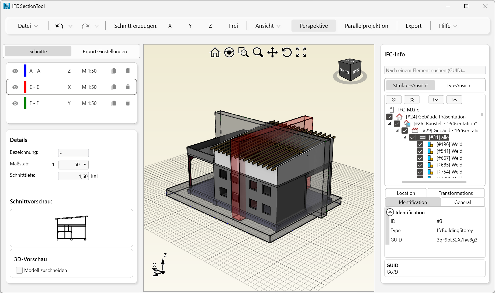

Sie können aus 3D-Modelldaten im IFC-Datenmodell Schnittansichten mit individueller Tiefe und Maßstab erstellen und an ISBCAD übergeben. Die Geometriedaten des 3D-Modells werden in das AKT-Format konvertiert und können in ISBCAD für die Tragwerks-, Schal- und Bewehrungsplanung genutzt werden.
Funktionen im IFC Section Tool
Mit dem IFC Section Tool können Sie:
·3D Modelldaten in den IFC-Versionen (Schemata) IFC2x3 und IFC4.0 einlesen,
·beliebige Schnitte in X-, Y- und Z-Richtung sowie freie Schnitte erstellen und bearbeiten,
·erstellte Schnitte exportieren und importieren, um sie z. B. an anderen Arbeitsplätzen zu verwenden oder nach einer Änderung der IFC-Datei wieder einzulesen,
·die Transparenz des 3D-Modells anpassen,
·für jeden Schnitt einen Maßstab, die Schnitttiefe und -bezeichnung angeben,
·einzelne Schnitte clippen, um lediglich den gewünschten Schnitt darzustellen,
·IFC-Objekttypen (z. B. alle Wände) über die Filterfunktion ein- und ausblenden, um zu bestimmen, welche Objekttypen exportiert werden sollen,
·die Darstellung von Kanten, Texten und Schnittpfeilen für die Übernahme in ISBCAD konfigurieren,
·beliebig oft Schnitte in die ISBCAD Instanz übernehmen, in der das IFC Section Tool gestartet wurde.
 |
Was ist IFC?
Das Industry Foundation Classes (kurz: IFC) Datenmodell ist ein von buildingSMART e. V. entwickeltes Dateiformat. Das IFC-Modell ermöglicht einen herstellerunabhängigen Austausch von Daten zwischen verschiedenen Softwareanwendungen. Diese Daten lassen sich während des gesamten Lebenszyklus eines Gebäudes unter allen Beteiligten austauschen und aktualisieren: von Entwurf, Detailplanung, Berechnungen über die Ausführung bis hin zur Gebäudeverwaltung. In einer IFC-Datei sind Gebäudestrukturen z. B. Fenster, Öffnungen, Wände, Geschosse, zugehörige Bauteileigenschaften sowie ergänzende Bauteilinformationen definiert.
Zugehörige Aufgaben:
·Schnitt erzeugen und bearbeiten
Zugehörige Referenzen:
·IFC Section Tool Einstellungen
Siehe auch: